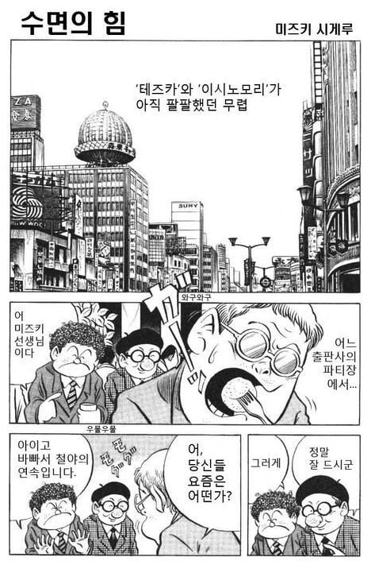
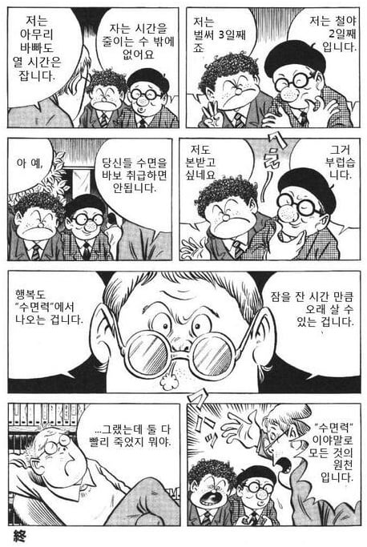

영면은 영원이다
영면은 영겁이다
뎋 그렇다면 잠을 계속 잔다면 미래로 몇천년이고 살 수 있는것인가!
오늘 9시에 잘거다 꿀잠딱대
이제 귀신같이 2~4시쯤 눈떠짐 ㅋㅋ
데즈카, 이시노모리 둘다 60을 못넘겼는데
이거 그린 작가는 90넘게 살다가 감
근데 마지막 유작이 하필 몇일째 변을 못봐서 관장하는 만화였던거 생각하면 그냥 건강하게 적당히 사는게 딱 좋아보이긴 하더라
물론 저렇게 안자면 몸도 망가지면서 일찍 죽는 지름길이긴 한데
바보녀석
미인의 여의사가 직접 손으로 처치해줘서 응기오오옷 말년에 참 귀중한 경험이었다...헤헤 하는 작가의 코멘트를 보아라
오래사는게 답이다
수면의 중요성도 있지만 작가분이 인자강인것도 있는듯
2차대전때 태평양전쟁 병사로 끌려가서 팔 잘리고 섬에 고립되어 죽을 고비도 넘겼는데 그 이후로 빡세게 만화도 그리면서 90살 넘게 산 걸 보면 미즈키 시게루는 인자강이 맞긴 함.
근데 일찍 자려해도 잠이 안와서 평균5시간만 자는건 괜찮은거? 알람없는 주말에도 더 자봐야 6시간인데
평소에 커피 많이 마시는 편이면 카페인 각성때문에 얕은 잠을 자다보니 그럴수도 있는데
6시간 자도 개운하게 일어난다 하면 걍 체질이 그런걸거임
시간도 시간인데 질이 중요하다고하더라
근데 잠도안오고 자는시간도 적은건 더 문제겠지?? 잠자는거 엄청중요함 한번 병원가봐
음 한국이 아니라서 찾아보니 좆같이 비싼데 그 돈 내고 나면 돈생각에 수면질 떨어질거 같음
예전에도 그런 사람들 모아놓고 실험 같은걸 했다고 하는데
충분히 자서(5~6시간) 안 피곤하다는 사람들 눕게하니까 거진 다 잤다고 하더라
밤을 지새워도 피로가 안 느껴질 때가 있는데, 체감만 그렇고 실제론 피로 누적된 것과 같지
수면검사같은거도있음
식습관.생활,수면패턴,스트레스,긴장도 등
병원 가서 상담 받아야할 듯
안 괜찮고, 계속 그러면 단명함
딱히 불편한거도 없고 그냥 자연스레 졸릴 때 자는건데 단명은 좀;;
걱정하는거야...
데즈카 오사무 이 만화가 코가 대단하다
근데 진짜 수명갈아서 적게 자는거아님?
잠을 적게 잔 만큼 단기적으로 이득 같지만 총량은 비슷하거나 열화...
마지막까지 위트를 잊지않았던 멋진 사람
잠을 5시간정도 자면서 술 자주 드시는분 회사에서 봤는데
얼굴이 흙빛임
50대에 가셨다
장례식장에 아들이 고1이더라
제발....건강챙겨
9시간 자야 건강
인간의 남은 수명은 깨어있는 시간에 줄어든다